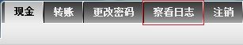
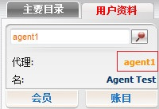
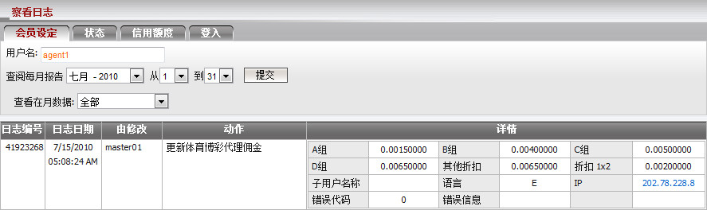
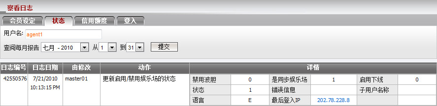
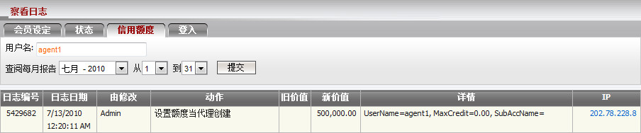
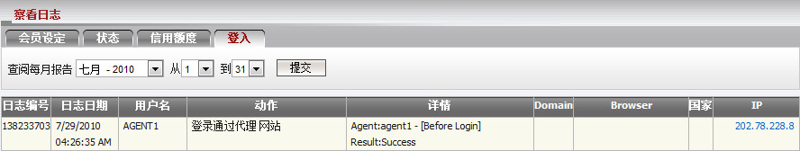
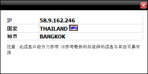

察看日志
此功能允许代理跟踪或追溯他的账号和其下线的所有执行活动.
该功能位置:
-
顶部的菜单栏

-
用户资料

功能支持:
登录用户可以选择特定的日期范围, 查看他自己/其所有下线甚至管理的执行操作的更新。
在一般情况下, 我们将在一年内提供并保留这些数据记录。这些活动分为以下4类:
-
客户设定: 包含所有日志活动
- 创建新账号/子账号.
- 佣金设定.
- 投注设定.
- 占成数设定.
- 客户/子账号信息.
- 密码.
- 子账号权限.
- 转账条件.
用户可以根据日志类型以筛选客户设置日志: 占成数, 佣金, 投注设定及一般信息

-
状态: 包含所有日志活动于
- 活跃/关闭/暂停.
- 允许/不允许优胜冠军.
- 启用/禁用状态.


-
登入: 包含登入信息于
目前不支持查看会员的登入日志数据.

IP信息:
当点击任何IP将出现一个弹出式的框架. 框架内包含属于该IP的国家/城市.

IP信息
更多说明:
- 子账号的权限设置如下:
- 随着更新账户权限: 可查看日志设置于会员设定/状态/信用额度/登入.
- 没有更新账户权限: 只可查看登入信息日志.